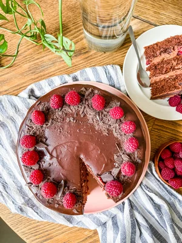

Pagatavo biskvītu. Bļodā samaisa sviestu ar cukuru, kakao, cepamo pulveri, miltus un sāli. Samiksē, līdz izveidojas viendabīga masa. Pa vienai ieputo olas. Beigās pievieno pienu un iemaisa arī to. Mīklu sadala divās daļās un lej divās 20 cm/dm formās. Biskvītus cep 160 ºC temperatūrā 20–25 minūtes. Pēc cepšanas atdzesē. Pagatavo krēmu. Bļodā puto sviestu kopā ar pūdercukuru un kakao, līdz izveidojas krēmīga masa. Tai pievieno krēmsieru un puto, līdz krēms kļuvis viendabīgs. Krēmu smērē starp atdzisušajiem biskvītiem un apkārt tiem. Kūku liek ledusskapī uz nakti savilkties. Pagatavo glazūru. Izkausē šokolādi kopā ar sviestu. To liek konditorejas maisiņā, kam nogriež mazu galiņu. Glazūru aptecina pa kūku, un to izdekorē ar dekoriem pēc izvēles.
⬅ Atpakaļ